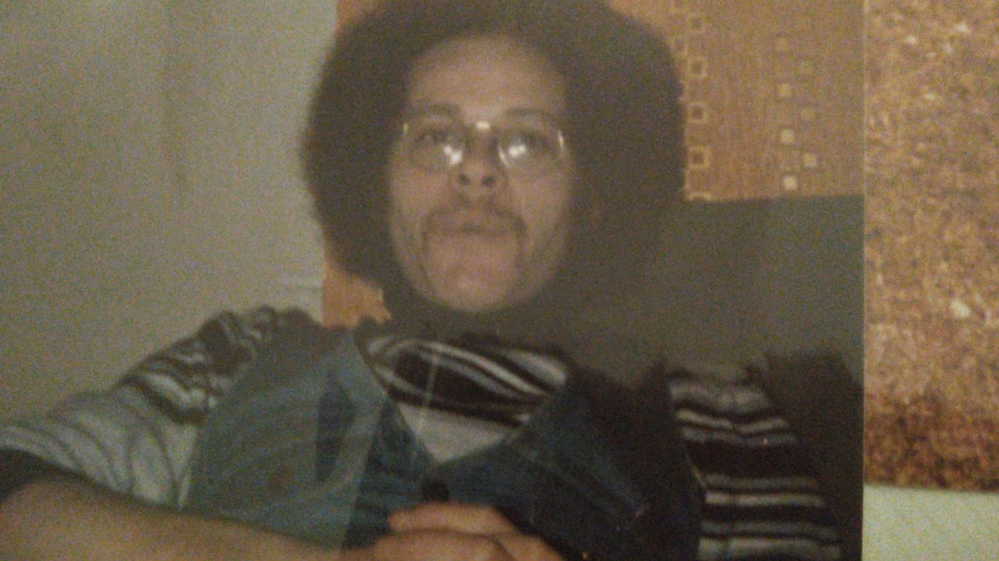

Tumbleweed Words
One piece of flash fiction or poetry.
Free, every week.
“Johnny was a great hugger; you got lost in his huge warm frame.”
Free · Weekly · No spam · Unsubscribe any time
Johnny lived where I wouldn’t have gone if he didn’t.

We lived a twenty-minute walk from one another but when high it felt like hours.
In a university town that had slowly declined from a lack of opportunity, forgotten by a deindustrialisation of steel factories. A high street, once offering daily fruit and veg markets as bakers baked and butchers hacked up meat and bones, was now full of vape shops and bookies, pubs and American fast-food restaurants. A rise in crime came with a flood of immigration. This made areas of the town no-go zones for locals who’d lived their entire lives. This led to division and unspoken resentment towards mobs of non-nationals who loitered around parks and communal spaces with nothing to do. The money left town with the rise in poverty, moved to large countryside homes, manors with land, places unable to be reached by bus, a local route that felt like a Jack the Ripper tour as crime rose with each cut in the police budget.
Johnny lived in an area of town I would not have visited if he didn’t. I went there because he was my best friend at university and had been duped into a year-long lease by a dodgy landlord who ran the local nightclub security. His landlord was also a drug dealer, originally from Pakistan, he’d spent a few years in prison. Something to do with a young girl. Once Johnny knew this about him, he accepted his lease fate, paid rent on time. The nightclub was full of underage girls and violence. Often it had code red shoutouts by the DJ when glass bottles started to fly or girls began tugging at each other’s hair over a guy who drove a Vauxhall Nova with expensive rims. Students were advised in class not to go to the club. I went once with Johnny and never again. Every single pair of eyes was on us. We were the only white people in the place, which didn’t bother us, but did the groups of black and Asian men who stood either side of a dancefloor full of girls wearing boob tubes and miniskirts. The student union would become our social home. Nights of snakebite and black, pints of Carling lager and cheesy pop tunes. Interactions between students who felt safe in one another’s company. It was fun. Sometimes bands from nearby London would come and play. It was somewhere to feel free and safe in a place that often didn’t.
Nothing seemed to work in the town. Cash machines were eternally out of order. Boarded up stores promising to ‘re-open soon’ after burning down suspiciously, never did. If using a public toilet in a park or shopping centre, places where junkies gathered daily, the taps never ran. Toilets were clogged with rolls of tissue. Thrown in by teens for a laugh. This made it impossible to take a piss without getting your feet wet. If you entered the public library to get a book for class it was a test of endurance, patience, dignity. Touchscreens to search titles were sticky and cracked. A result of someone losing their shit because a kid’s book wasn’t in stock and the parent couldn’t take it anymore. A stained carpet was covered in empty crisp packets, sweet wrappers, butt ends and empty MacDonald’s boxes. Cans of Tennent’s Super, held in the hand by bearded homeless men, were often thrown in the entrance. The homeless dogs not being allowed in often resulted in their owners’ throwing insults at staff and storming out. Thank God. The dogs looked angry and the homeless stank like rotting fish. The library eventually got security until it was closed.
I went to the public library because the university library was diabolically understocked. Books would be taken out for weeks at a time by students and only returned when fines were issued. But at least the student books were in good condition. At the public library, books were cracked at the spine, sitting in no discernible order on the shelves. The gutting of that library was a metaphor for the town. It reminded me of the brain drain of a country during war as those able to leave fled, taking with them their knowledge, education, assets. A communal space designed to enlighten minds was looted daily. Destroyed by a mob of angry locals left behind, no longer sustained by the wealthy who lived in local countryside estates.
Little felt healthy in the town. Not the racial segregation, random acts of violence served by one addict onto another in broad daylight. The looting of a local Co-op supermarket, how men in balaclavas would casually walk into the store, past a grandmother as they scanned groceries at a till, up a booze aisle. It all looked so casual. It was hard to believe I had ended up in this town to study a degree. But considering my grades, I was lucky to have been accepted, even if unconditional offers were being handed out like welfare cheques at the local job centre. Being a sociology degree, the irony wasn’t lost on me, or classmates who walked home in groups to avoid being seized upon by teenage locals. Youths dressed in Kappa or Nike or adidas would spit on the ground as students took the long walk home from campus to halls.
Student wankers!
Posh twats!
I’ll have you next time!
Like most people in town, they had too much time.
I always cycled to Johnny’s place. If quick I could be at his door in ten minutes. It was mostly uphill. Once inside the high rise, I had to lug my bike up flights of stairs (elevator never worked). His building stank of piss and smoke, had breezeblock walls covered in threatening words sprayed onto white: HILL KILL SQUAD, SLIT THROAT CREW, BAD BOYZ 4 LIFE. If a gang of youths caught me on my own when on their estate, as an outsider—worse, a student outsider, it could be game over for me. Unless I knew a name and bought something off them directly, a knife was getting shown. I would then be robbed. Stood in huddles or on metal benches or by a phone box, sometimes the local gangs would shout at me as I rode towards Johnny’s.
What you doing round here, lad?
Crank, smoke or H, what you after?
Don’t recognise you mate.
Oi, you want wetting?
I said nothing and cycled on. After a few visits they stopped shouting.
Johnny had more street smarts than academic skills. He was a massive stoner and barely left his one bed flat other than to nip to a local off license to load up on snacks and booze and fags. When he did attend classes, he took taxis. But he had to get them from the main road leading onto the estate. The taxi drivers, local Asian men from the other side of town, wouldn’t drive into the estate. They knew about the gangs better than most. They’d formed their own crew, drawn a line across town. The youths on the estate left Johnny alone. He was 6’4 and 250 pounds. He dressed in tracksuits bought from Sports Direct to blend in and bought weed from a couple of the youths on a weekly basis. He bought in batches, half ounces mainly, even though the weed was shit.
Despite failing his degree, Johnny excelled in street smarts. His parents had split when he was nine. Throughout a bitter divorce things had gotten tough. His mum took on a job and worked nights at a local pub. This left Johnny with plenty of time to get in trouble. Once the divorce settlement came through, though, his mum moved her only son to a better area of a shit town, bought a second-hand car, got qualified as an estate agent, started selling homes. By then, Johnny had been arrested a couple of times and formed a weed habit. During this unsettling time, he had learnt enough about being in the streets to know it’s all about showing respect and standing tall. He got the good weed from a friend back home who’d grown up on a farm. What he bought on the estate was for survival. He sold most of it to other students at a discount, ate a small financial loss.
Once I had made it up the stairs to his place, I would stand at his front door and take a moment to catch my breath. When entering his flat, smoke slapped you in the face. It was like opening an oven door to retrieve a pizza you put in when you had the munchies, only to fall asleep and awake to a room of fog an hour later. Johnny was a rise and shine smoker. But I loved hanging out with him and made the trip there willingly. Johnny had an infectious smile, great taste in music and liked to laugh when high.
One time, I was stared down while stood at his front door with my bike. Sweat poured down my face like rain down a windowpane. I was confronted by a skinhead with face tattoos, offered twenty quid for the bike. When I said I was good, he towered over me and whispered in an ear, ‘if you want to stay good, you’ll give me that fucking bike, lad.’ I did want to stay good but had nothing to say in response. The skinhead dressed in a red adidas tracksuit and steel toecap boots. He stank of vodka and stale cigarettes. His eyes were bloodshot and crazed, his fists scarred and clenched, ready to go to work if I showed any front. I was about to say ‘please’ but thankfully Johnny came to the door. Begging would only have accelerated his behaviour.
‘Alright Kenny,’ Johnny said. ‘That smoke was fire last week. High as F.’
Kenny backed off. ‘Johnny. He with you then?’
‘Gabriel, yeah, yeah, he’s cool.’
Kenny nodded. Stepped away from me and my bike and turned to take the stairs. Kicking an empty can of Stella against a brick wall, he stuffed cannonball fists into tracksuit pockets and began the climb down. ‘Just make sure he doesn’t disrespect the place,’ he said. ‘Lad’s got an attitude.’
‘Will do,’ Johnny said.
Once inside Johnny’s place I could relax. Even if his place looked like a tip. Clothes and books, video games and DVDs were piled up everywhere. Johnny rarely cleaned but always made sure that there was a small social space for us to convene. In a one-bedroom flat this meant two chairs situated around a computer on a desk used to roll joints. The joint rolling area was always clean. Johnny had a tray, grinder, ashtray and lighters lined up neatly next to tobacco and papers. When it came to smoking, he was always prepared.
As usual on entry, my eyes began to sting from the smoke, and my mouth became so dry it was hard to swallow. In recent months I’d convinced Johnny to open a window when he smoked after he almost coughed up a lung. My presence would remind him to air. He’d then get me a glass of water. But before any of that took place, we would embrace with a hug. Johnny was a great hugger; you got lost in his huge warm frame. He had rosy cheeks and thick hair. Despite growing up in Birmingham and having a thick west midlands accent, he looked like the type of round bellied, jolly Flemish man you’d find as a logo on a bottle of creamy beer. Inside his flat, a place where clothes piled up in corners and the kitchen sink was never empty of plates and bowls smeared in curry sauces or half eaten kebab, Johnny had a way of making you feel at home.
‘Duuuuude,’ he would often say words in an exaggerated tone. ‘How is it?’
‘All good, Johnny boy.’
‘Epic. Let’s get you a glass of water and have ourselves a smoke, shall we?’
‘Sounds good.’
‘Eeeeeeeeeepic.’
Johnny was someone you could rely on. Despite never being on time. Despite doing the bare minimum at university to make the next year. Despite never really leaving his flat for more than the time that was necessary. He was someone who was always there for you. Until one day he left his flat to score some weed and a dealer tried to rob him. Johnny wasn’t having that and quickly put the man in a headlock. That’s when the dealer’s friends appeared. Suited and booted in their usual tracksuit gear. Armed with blades and zombie knives. I was told about it all by my tutor the next day at university. I was pulled out of a seminar Johnny had no doubt slept through for the tenth week in a row. Taken over to an area of the campus where student support workers and counsellors were. I was sat down and asked to wait until a counsellor named Kate arrived. She looked my age. She sat down in front of me on a stool and placed her hands in her lap. I remember Kate having excellent posture, soft words, eyes and skin. Anyway, that’s when they told me what had happened to Johnny an hour after I’d left his place.
end
Written on the road and sent directly to your inbox. No ads, no noise. Just the work.
Free · Weekly · No spam · Unsubscribe any time
Tumbleweed Words
“Johnny was a great hugger; you got lost in his huge warm frame.”
Free · Weekly · No spam · Unsubscribe any time